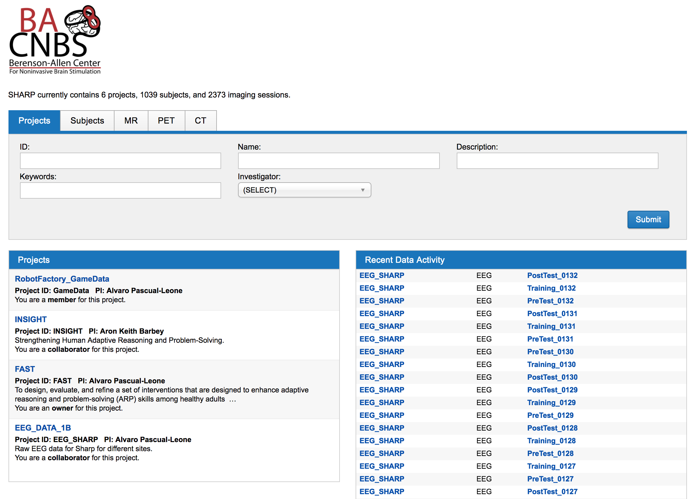

Welcome to Strengthening Human Adaptive Reasoning and Problem-Solving (SHARP) Repository documentation!¶
Adaptive reasoning and problem solving represent crucial skills in increasingly information-rich working environments. The SHARP research project is a multi-institutional competitive and collaborative effort that seeks to understand the neurobiological substrates of fluid intelligence and its malleability in response to a wide variety of interventions. This research effort, across all involved institutions collected the largest dataset on the training of fluid intelligence and its possible neural correlates. To ultimately share this resources to all researchers, a repository has been created to hold this data: https://sharp.bidmc.harvard.edu. We have hosted this data using the XNAT data repository infrastructure. This infrastructure has been extended to fit the data elements of interest, including EEG, quantitative phenotypical information, cognitive assessment and MR imaging data. At present data includes over 500 research participants, and over 800 imaging sessions. Additional data access tools have been developed for easy researcher which are distributed alongside the data. This repository offers a valuable resource for studies investigating the flexibility of fluid intelligence.
